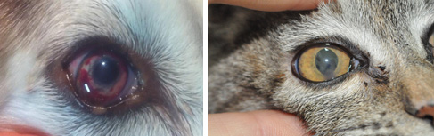

가족과 함께 평생을 함께하는 반려동물.
소중한만큼 건강을 챙겨주는 일도 최선을 다해야합니다
ANYPET ANIMAL HOSPITAL
가족과 함께 평생을 함께하는 반려동물.
소중한만큼 건강을 챙겨주는 일도 최선을 다해야합니다
ANYPET ANIMAL HOSPITAL
눈꺼풀의 염증, 눈꺼풀 종양, 구조적 이상, 찌르는 눈썹, 코 눈물관 막힘, 선천적 이상, 눈물 흘림 등을 진단하고 치료 서비스를 제공합니다. 눈꺼풀 성형술, 종양 제거술, 찌르는 눈썹 제거술, 코 눈물관 재건 및 성형술 등이 시행되고 있습니다.
결막염, 각막염, 백내장, 건성안, 각막 혼탁, 각막궤양 및 천공, 기타 각막이상 등의 질병을 진단하고 치료 서비스를 제공합니다.
다양한 망막병증, 망막박리, 포도막염, 시신경염, 유리체 질환 등을 진단하고 치료합니다. 이와 관련한 눈의 구조변화 및 시력 이상 등을 진단하고 치료 서비스를 제공합니다.
세극등 현미경 검사, 직상/도상 검안경 검사, 안압측정, 시력 검사, 망막기능 (시력) 검사, 눈의 위치 및 반응 검사, 눈의 움직임과 관련되는 신경검사, vital stain, Schirmer tear test, 초음파 검사, CT, MRI검사, 미생물 배양 및 항생제 감수성 검사, 세포검사, 조직검사, 눈과 관련된 전신질환 검사 등을 본원 내 협진 시스템을 통하여 제공하고 있습니다.
눈꺼풀 성형술, 종양 절제술, 깊은 안구 궤양 및 파열 회복을 위한 각결막 이식술, 백내장 수술, 녹내장 수술, 안압하강을 위한 주사시술, 앞방 내 주사술과 유리체 내 주사술, 의안 (인공안구) 수술, 안구 외상 수술, 기타 안과 관련 수술
Copyrights (C) 2020 Veterinary Medical Teaching Hospital. Anypet Animal Hospital All Rights Reserved.
979-742 . 경기도 용인시 수지구 만현로 9 애니펫동물병원 tel . 031-265-8661 FAX . 031-256-8662 EMAIL . anypet@suy.ac.kr